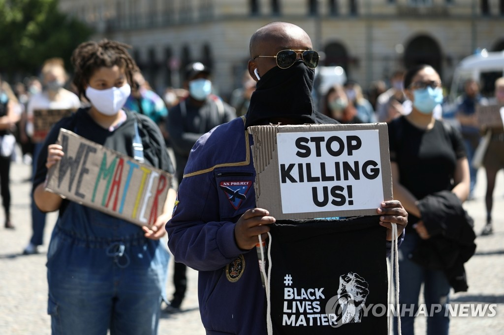

미국 미네소타주에서 흑인 남성 조지 플로이드가 백인 경찰의 과잉 진압으로 숨진 사건 이후 미 전역에서 항의 시위가 격화하는 가운데, 도널드 트럼프 대통령이 시위대를 피해 백악관 벙커로 피신했다는 소식이 전해졌다. 5월 30일(현지시간) 뉴욕타임스(NYT)는 수백 명의 시위대가 백악관 밖에서 트럼프 대통령을 향해 욕설을 내뱉었고, 벽돌과 병을 던지기도 했다고 현지 상황을 보도했다. 이에 비밀경호국 요원들이 트럼프를 테러 당시 사용했던 지하 벙커로 대피시켰다고 전했다.
세계 각지 주민들이 미국 시위대에 동조하며 인종차별을 규탄하고 있고, 미국과 적대 관계에 있는 나라들은 이번 사건을 '미국의 위선'을 지적하는 도구로 활용하는 등 트럼프 행정부에 대한 비판의 목소리가 동시다발적으로 터져나오고 있다는 것이다.